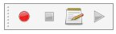

Macros
Introduction
Macros are a convenient way to reproduce complex actions in FreeCAD. You simply record actions as you do them, then save those actions under a name, and replay them whenever you want. Since macros are in reality a list of Python commands, you can also edit them, and create very complex scripts.
While Python scripts normally have the .py extension, FreeCAD macros should have the .FCMacro extension. A collection of macros written by experienced users is found in the macros recipes page.
See the Power users hub to learn more about the Python programming language, and about writing macros. In particular, you should start with these pages:
How it works
Enable the console output in the menu Edit → Preferences → Python → Macro → Show scripts commands in Python console. You will see that in FreeCAD, every action you do, such as pressing a button, outputs a Python command. Those commands are what can be recorded in a macro. The main tool for making macros is the macros toolbar: 

It is very simple to use: Press the record button, you will be asked to give a name to your macro, then perform some actions. When you are done, click the stop recording button, and your actions will be saved. You can now access the macro dialog with the edit button.

Macro dialog, listing the macros available in the system
There you can manage your macros, delete, edit, duplicate, install or create new ones from scratch. If you edit a macro, it will be opened in an editor window where you can make changes to its code.
Example
Press the record button, give a name, let's say "cylinder 10x10", then, in the Part Workbench, create a cylinder with radius = 10 and height = 10. Then, press the "stop recording" button. In the edit macros dialog, you can see the Python code that has been recorded, and, if you want, make alterations to it. To execute your macro, simply press the execute button on the toolbar while your macro is in the editor. You macro is always saved to disk, so any change you make, or any new macro you create, will always be available next time you start FreeCAD.
Customizing
Of course it is not practical to load a macro in the editor in order to use it. FreeCAD provides much better ways to use your macro, such as assigning a keyboard shortcut to it or putting an entry in the menu. Once your macro is created, all this can be done via the Tools → Customize menu.

This way you can make your macro become a real tool, just like any standard FreeCAD tool. This, added to the power of Python scripting within FreeCAD, makes it possible to easily add your own tools to the interface.
See Customize Toolbars for a more detailed description.
import FreeCAD as App
import Part
from FreeCAD import Vector
doc = App.newDocument("GamingZone")
- Dimensions in millimeters
ROOM_L = 8000 ROOM_W = 6000 WALL_H = 3000 WALL_T = 150
- Colors
floor_color = (0.16, 0.17, 0.20) wall_color = (0.30, 0.32, 0.38) desk_color = (0.10, 0.11, 0.14) rgb_blue = (0.0, 0.65, 1.0) rgb_purple = (0.65, 0.1, 1.0) chair_color = (0.08, 0.09, 0.12) monitor_color = (0.015, 0.02, 0.03)
def cube(name, x, y, z, lx, ly, lz, color):
shape = Part.makeBox(lx, ly, lz, Vector(x, y, z))
obj = doc.addObject("PartDesign::Feature", name)
obj.Shape = shape
obj.ViewObject.ShapeColor = color
return obj
- Floor
cube("Floor", 0, 0, 0,
ROOM_L, ROOM_W, 150, floor_color)
- Back wall and side walls
cube("BackWall", 0, ROOM_W - WALL_T, 150,
ROOM_L, WALL_T, WALL_H, wall_color)
cube("LeftWall", 0, 0, 150,
WALL_T, ROOM_W, WALL_H, wall_color)
cube("RightWall", ROOM_L - WALL_T, 0, 150,
WALL_T, ROOM_W, WALL_H, wall_color)
- Front wall sections leave a central entrance
cube("FrontLeft", 0, 0, 150,
2500, WALL_T, WALL_H, wall_color)
cube("FrontRight", 5500, 0, 150,
2500, WALL_T, WALL_H, wall_color)
- RGB accent strips on the floor perimeter
cube("BlueLED", 400, 500, 155,
7200, 35, 12, rgb_blue)
cube("PurpleLED", 400, 5500, 155,
7200, 35, 12, rgb_purple)
- Four gaming stations
station_x = [1000, 2600, 4200, 5800]
for i, x in enumerate(station_x, start=1):
y = 3900
# Desk top
cube("DeskTop" + str(i),
x, y, 850, 1300, 650, 60, desk_color)
# Desk legs
for dx in [80, 1160]:
for dy in [50, 560]:
cube("DeskLeg", x + dx, y + dy, 150,
50, 50, 700, desk_color)
# Monitor body
cube("Monitor" + str(i),
x + 400, y + 470, 920,
500, 35, 300, monitor_color)
# Monitor stand
cube("MonitorStand" + str(i),
x + 620, y + 480, 870,
60, 40, 50, desk_color)
# Keyboard
cube("Keyboard" + str(i),
x + 430, y + 170, 915,
400, 140, 18, chair_color)
# Gaming chair seat and back
cube("ChairSeat" + str(i),
x + 450, y - 650, 520,
400, 400, 100, chair_color)
cube("ChairBack" + str(i),
x + 450, y - 680, 620,
400, 100, 550, chair_color)
# Chair pedestal
cube("ChairBase" + str(i),
x + 620, y - 480, 180,
60, 60, 340, desk_color)
- Central reception counter
cube("Reception", 2800, 1800, 850,
2400, 650, 900, desk_color)
- Reception accent panel
cube("ReceptionRGB", 2850, 1775, 1100,
2300, 25, 100, rgb_blue)
- Wall-mounted decorative panels
for i in range(5):
cube("WallPanel" + str(i),
900 + i * 1300, 5800, 1500,
800, 35, 900,
rgb_purple if i % 2 else rgb_blue)
- Recompute and display
doc.recompute()
Gui.activeDocument().activeView().viewAxonometric() Gui.activeDocument().activeView().fitAll()
print("Gaming zone model created successfully!")
Macro repositories
There are two main places for macros. The first one is the official peer-reviewed macro repository on GitHub. The second one is the Macros recipes page from which you can pick some useful macros to add to your FreeCAD installation. Macros from both repositories can be installed via the Addon Manager directly from FreeCAD.
Additional information
Tutorials
You can manually install extensions, however, it is much simpler to just use the Addon Manager.
- FreeCAD scripting: Python, Introduction to Python, Python scripting tutorial, FreeCAD Scripting Basics
- Modules: Builtin modules, Units, Quantity
- Workbenches: Workbench creation, Gui Commands, Commands, Installing more workbenches
- Meshes and Parts: Mesh Scripting, Topological data scripting, Mesh to Part, PythonOCC
- Parametric objects: Scripted objects, Viewproviders (Custom icon in tree view)
- Scenegraph: Coin (Inventor) scenegraph, Pivy
- Graphical interface: Interface creation, Interface creation completely in Python (1, 2, 3, 4, 5), PySide, PySide examples beginner, intermediate, advanced
- Macros: Macros, How to install macros
- Embedding: Embedding FreeCAD, Embedding FreeCADGui
- Other: Expressions, Code snippets, Line drawing function, FreeCAD vector math library (deprecated)
- Hubs: User hub, Power users hub, Developer hub